Agora ninguém mais perde o próximo capítulo
Novelinhas são séries em vídeo vertical, mas o GloboPop entregava cada episódio como um vídeo solto. Redesenhei a experiência para dar ordem, memória e continuidade a cada história.
01 · Contexto
Novelinha é série. O palco* tratava como vídeo sem continuidade.
O GloboPop é o app de vídeos curtos da Globo. As novelinhas, ou microdramas, são séries em vídeo vertical, com tudo que "série" exige: ordem, memória e continuidade.
* Palco é como o GloboPop chama o perfil dentro da plataforma: a página que reúne os vídeos de um personagem, programa ou marca, como o palco da Carminha, de Avenida Brasil.
Meu papel: UX Designer Sênior na squad do GloboPop. Conduzi o projeto de ponta a ponta: análise de dados, voz do usuário, benchmark, princípios, ideação, telas, cenários com o Globoplay e handoff.
O conceito de novelinha
Episódios numerados
Uma história que progride do ep. 1 ao fim, com ordem e continuidade.
Personagens e conflito
Dependência total entre episódios: perder um deixa buraco na trama.
Série de streaming vertical
O formato é mais perto de uma série de streaming do que de um vídeo de feed.
Hoje o palco mostra vídeos.
Ele ainda não conta histórias.
Cada vídeo vive sozinho: sem ordem, sem "próximo episódio", sem memória de onde a pessoa parou. Uma novelinha chegava como um monte de vídeos soltos.
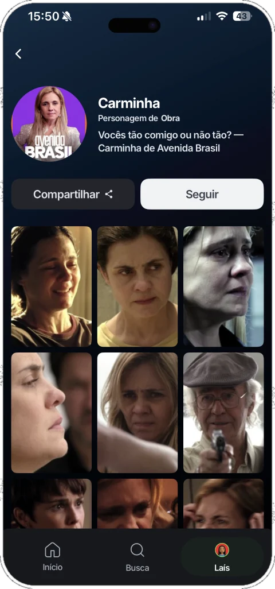
02 · Problema
Ninguém está assistindo na ordem
Cruzei os dados de consumo do Horizon com o que os usuários diziam nas lojas e nos comentários. O comportamento era claro: a pessoa assiste fora de ordem porque o feed não tem ordem.
Retenção por capítulo
O capítulo mais visto é o mais recente publicado no feed, não o próximo da história.
ep. 2 → só 1% · ep. 7 → 33%
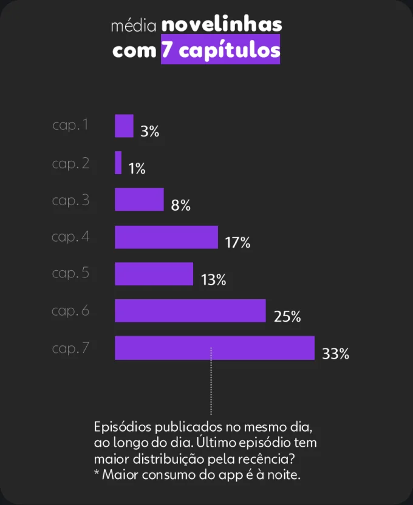
Quem assiste novelinha usa muito mais o app
Os usuários de novelinha são os mais engajados e os que mais voltam ao app durante a semana.
64%
de quem volta 4+ dias por semana é noveleiro
+154%
mais tempo de vídeo por dia do que os demais usuários
Fonte: Horizon (dado interno) · só conteúdo de novelinhas · consumo entretenimento · 13/04 a 28/05/2026 · % em relação ao total da novelinha no período.
A voz do usuário
Nas avaliações das lojas e nos comentários do app, as pessoas não achavam nem entendiam os formatos, e pediam novelinha.
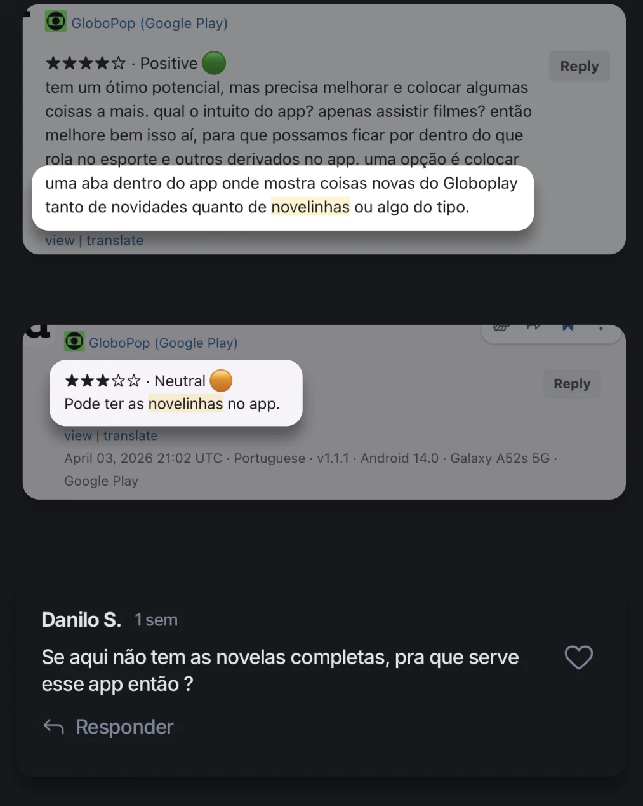
HipóteseSe o produto reconhecer a novelinha como série, mostrando onde a pessoa parou, qual é o próximo capítulo e quanto falta, ela acompanha a história até o fim e volta mais vezes.
03 · Processo
Benchmark, insights e princípios
- Dados do Horizon: retenção por capítulo, recorrência e tempo de vídeo de quem consome novelinha.
- Voz do usuário: avaliações nas lojas e comentários no app.
- Benchmark: TikTok, YouTube, Globoplay, PineDrama e Netflix.
- Princípios norteadores: comportamento e usabilidade para justificar cada decisão.
- Ideação em dois cenários: novelinha GloboPop e novelinha Globoplay.
Benchmark
Analisei como apps de vídeo e streaming resolvem ordem, progresso e descoberta de séries. Três padrões se repetiram:
- TikTok
- YouTube
- Globoplay
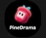
PineDrama- Netflix
Série tem ordem e progresso
Episódios em ordem, com o que já foi assistido e um CTA para continuar de onde parou.
Contexto sempre à vista
Nome da série, episódio atual e quantos faltam ficam visíveis durante o consumo.
Descoberta e ponte
Área própria na busca. Publicidade leva ao consumo; conteúdo premium leva a outro app.
Princípios norteadores
01
Histórias incompletas nos puxam de volta
Uma história interrompida faz o cérebro querer voltar para saber o final.
02
Ver o progresso acelera o fim
Quanto mais perto da meta, maior a motivação para concluir.
03
Contexto cria hábito
Mesmo horário, mesmo lugar: a "novela das 9" é engenharia de hábito.
04
Menos esforço, mais história
Quanto mais simples a experiência, menor a carga cognitiva.
05
Modelos mentais
As pessoas esperam que o app funcione como os apps que elas já usam.
06
Reconhecer, nunca lembrar
Nunca peça para a pessoa lembrar onde parou.
04 · Solução
Cinco pontos de contato, uma só continuidade
A solução não é uma tela nova. É fazer a novelinha se comportar como série em cada lugar onde ela aparece. Em cada ponto de contato, desenhei a versão GloboPop e a versão Globoplay.
- 01Consumo
- 02Feed da novelinha
- 03Palco
- 04Notificação
- 05Busca
Dois cenários, uma solução para cada
Nem toda novelinha termina no GloboPop. Cada ponto de contato foi desenhado para os dois cenários, lado a lado.
Novelinha GloboPop
A história inteira acontece no GloboPop: a pessoa acompanha do primeiro ao último episódio sem sair do app.
Novelinha Globoplay
Produção do Globoplay. Os primeiros episódios ficam no GloboPop, e a continuação é exclusiva do Globoplay, com assinatura.
Ponto de contato 01
Consumo
Durante o vídeo, a pessoa sabe que está numa série e tem um caminho direto para o próximo capítulo.
01
Acompanhar novelinha
Um toque no CTA e a história continua: leva direto para o próximo capítulo, num feed dedicado.
02
Identificação do episódio
Nome da novelinha, episódio atual e continuidade sempre à vista.
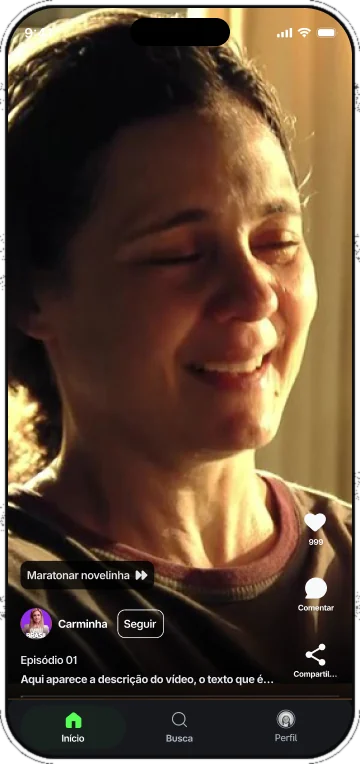
Novelinha GloboPop
O CTA leva para o feed dedicado da novelinha, dentro do app.
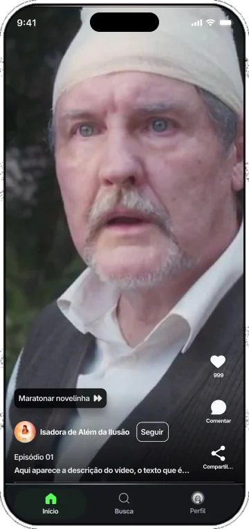
Novelinha Globoplay
O botão no player reforça que a história tem continuação exclusiva no Globoplay.
Ponto de contato 02
Feed da novelinha
Um feed só da história, em ordem. É aqui que a sequência acontece.
01
Próximo episódio
No fim do episódio, um toque e a história continua.
02
Navegue pelos episódios
Assistidos, atual, próximos e bloqueados, em ordem.
03
Autoplay
Um episódio puxa o outro, em sequência. Em avaliação.
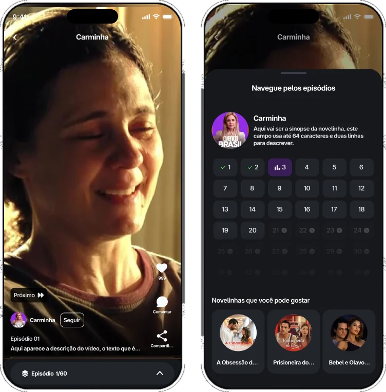
Novelinha GloboPop
Navegação por todos os episódios e sugestões de outras novelinhas.
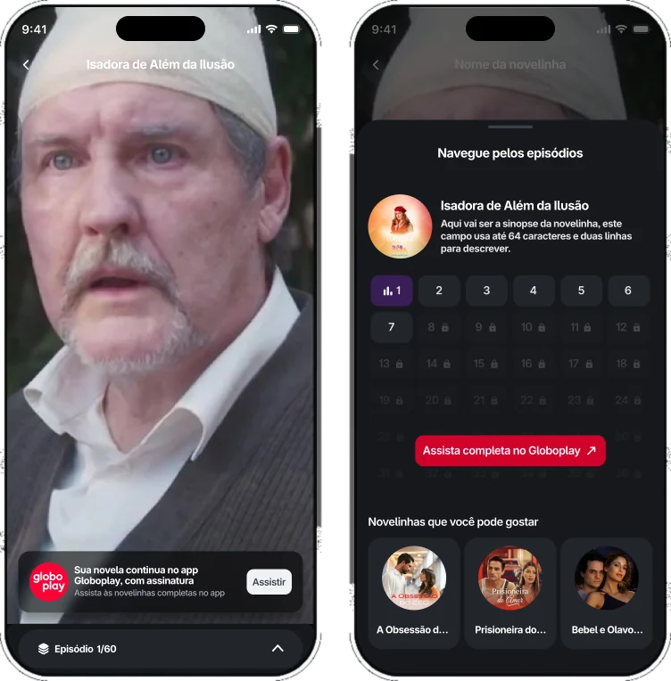
Novelinha Globoplay
"Continue no Globoplay" na navegação e, depois do 7º episódio, uma tela de encerramento com sugestões.
Ponto de contato 03
Palco
O palco deixa de ser uma grade de vídeos soltos e vira a página da série.
01
Thumb do episódio
Número e título visíveis de cara, com identificação fácil.
02
Botão de continuar
"Começar a assistir" vira "Assistir episódio 5": o palco leva direto ao próximo capítulo.
03
Status de assistido
A thumb já vem marcada: a novelinha guarda o progresso.
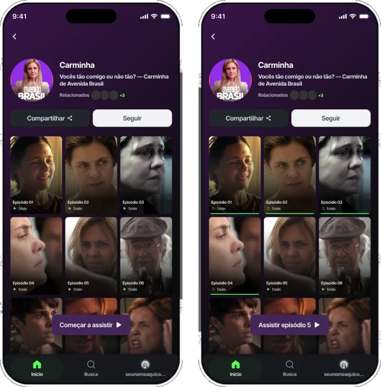
Novelinha GloboPop
O botão acompanha o progresso: "Começar a assistir" vira "Assistir episódio 5" depois do episódio 4.
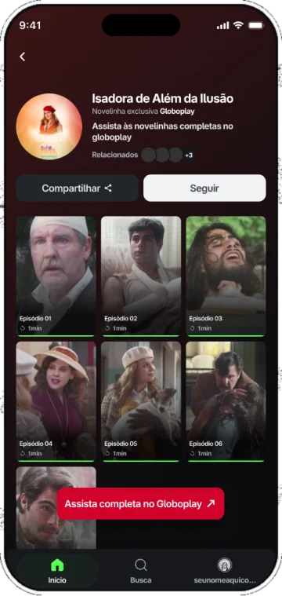
Novelinha Globoplay
A tag "Novelinha exclusiva Globoplay" no header e o botão "Assista completa no Globoplay" avisam que a história continua fora do app.
Pontos de contato 04 e 05
Notificação e busca
Fora do consumo, dois pontos trazem a pessoa de volta na hora certa e ajudam a descobrir novas histórias.
01
Ativar notificação
Ative o aviso para não perder nenhum episódio novo.
02
Central de notificações
Quando um episódio é liberado, o aviso chega para não perder o timing da história.
03
Área dedicada na busca
Um espaço para descobrir novelinhas disponíveis e recomendadas. Em estudo.
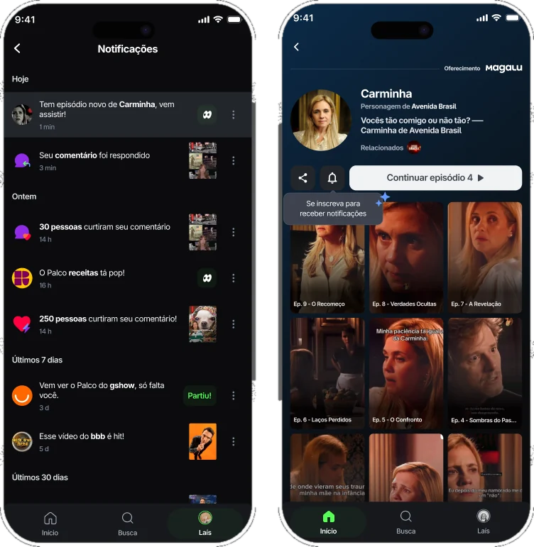
Notificação
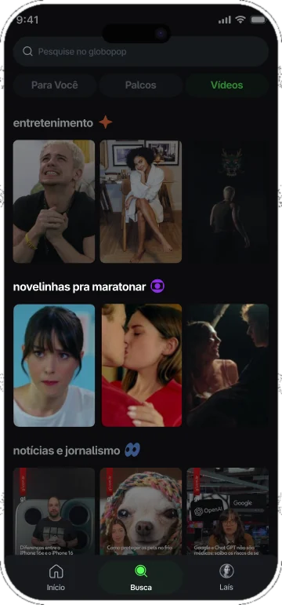
Busca
Handoff
Do protótipo ao dev: telas, specs, componentes e fluxos
Documentei a feature em três camadas para dev e QA: um board das telas com contexto e regra de negócio, specs com os tokens do Codex+ e fluxos por cenário, GloboPop e Globoplay.
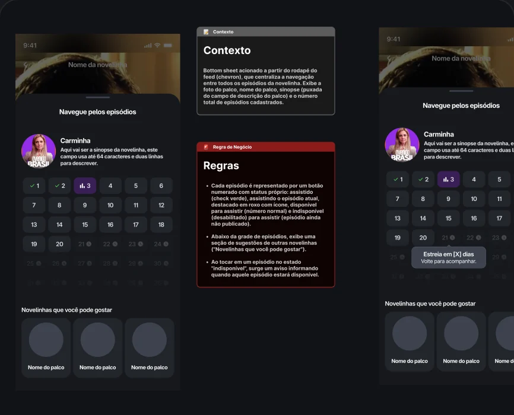
Board das principais telas, regras de negócio e contexto
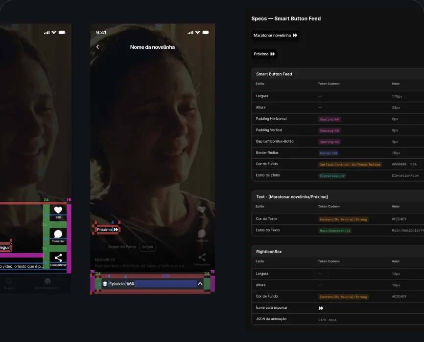
Specs · redlines e tokens
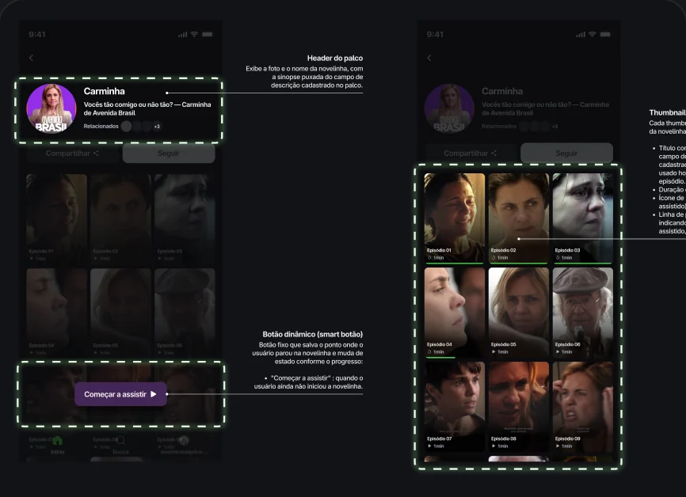
Galeria de novos componentes
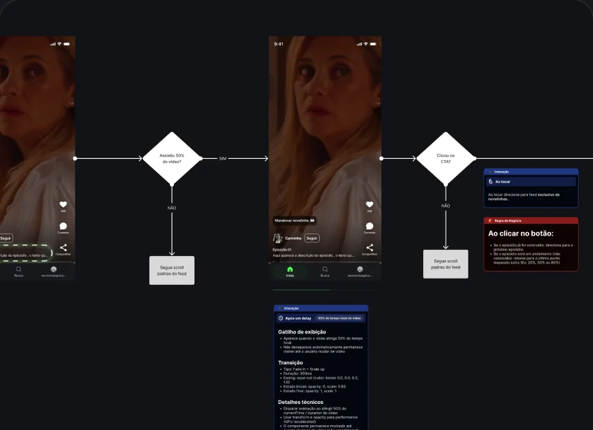
Fluxos com as regras
Fonte: arquivo de handoff "GloboPop – Funcionalidades", página Novelinhas 2.0 (board das telas, specs, componentes e fluxos).
05 · Resultados
Como vou medir
A solução está em implementação no GloboPop, então ainda não há dados pós-lançamento. O ponto de partida é a curva de retenção invertida: hoje o ep. 2 fica com 1% das views e o ep. 7 com 33%.
01
Retenção por capítulo
Curva decrescente de novo, com o ep. 2 bem acima de 1%.
02
Conclusão
Pessoas que chegam ao último episódio liberado.
03
Recorrência
Dias por semana de quem acompanha novelinha.
04
Ponte com o Globoplay
Cliques no touchpoint das novelinhas Globoplay.
06 · Aprendizados
O que levo deste projeto
- O dado muda a pergunta. Sem o Horizon, eu teria desenhado um feed mais bonito. Com ele, o problema virou ordem e continuidade.
- Modelo mental vence novidade. A pessoa espera que uma série funcione como nas plataformas que ela já usa. Reconhecer, nunca lembrar.
- Dois apps, uma jornada. Desenhar o cenário Globoplay exigiu pensar onde a história termina para a pessoa, não onde termina o app.
07 · Próximos passos
Próximos passos
01
Acompanhar e medir
Acompanhar a implementação e medir a retenção por capítulo, a conclusão e a recorrência.
02
Evoluir notificação e busca
Testar o aviso de episódio novo e evoluir a área dedicada de novelinhas na busca.
Próximo projeto
BR Media · Comunidades MIS
Now no one misses the next episode
Novelinhas are vertical video series, but GloboPop delivered each episode as a standalone video. I redesigned the experience to give every story order, memory and continuity.
01 · Context
Microdramas are series. The palco* treated them as videos with no continuity.
GloboPop is Globo’s short-video app. Novelinhas, or microdramas, are vertical video series, with everything a "series" needs: order, memory and continuity.
* Palco ("stage") is what GloboPop calls a profile on the platform: the page that gathers the videos of a character, show or brand, like the palco of Carminha, from the soap opera Avenida Brasil.
My role: Senior UX Designer on the GloboPop squad. I led the project end to end: data analysis, voice of the user, benchmark, principles, ideation, screens, Globoplay scenarios and handoff.
What a novelinha is
Numbered episodes
A story that moves from ep. 1 to the end, with order and continuity.
Characters and conflict
Episodes fully depend on each other: missing one leaves a hole in the plot.
Vertical streaming series
The format is closer to a streaming series than to a feed video.
Today the palco shows videos.
It does not tell stories yet.
Each video lives on its own: no order, no "next episode", no memory of where the person stopped. A novelinha arrived as a pile of loose videos.
02 · Problem
No one is watching in order
I crossed viewing data from Horizon with what users said in app store reviews and comments. The behavior was clear: people watch out of order because the feed has no order.
Retention by episode
The most watched episode is the latest one published in the feed, not the next one in the story.
ep. 2 → only 1% · ep. 7 → 33%
Novelinha viewers use the app much more
Novelinha viewers are the most engaged users and the ones who come back to the app most during the week.
64%
of people who come back 4+ days a week watch novelinhas
+154%
more video time per day than other users
Source: Horizon (internal data) · novelinha content only · entertainment viewing · Apr 13 to May 28, 2026 · % of the novelinha total in the period.
The voice of the user
In app store reviews and in-app comments, people could not find or understand the formats, and asked for novelinhas.
HypothesisIf the product treats the novelinha as a series, showing where the person stopped, what the next episode is and how much is left, they will follow the story to the end and come back more often.
03 · Process
Benchmark, insights and principles
- Horizon data: retention by episode, return frequency and video time of novelinha viewers.
- Voice of the user: app store reviews and in-app comments.
- Benchmark: TikTok, YouTube, Globoplay, PineDrama and Netflix.
- Guiding principles: behavior and usability to back every decision.
- Ideation in two scenarios: GloboPop novelinha and Globoplay novelinha.
Benchmark
I looked at how video and streaming apps handle order, progress and series discovery. Three patterns kept coming up:
- TikTok
- YouTube
- Globoplay
- PineDrama
- Netflix
A series has order and progress
Episodes in order, showing what has been watched and a CTA to continue where you left off.
Context always in view
Series name, current episode and how many are left stay visible while watching.
Discovery and bridge
A dedicated area in search. Ads lead to viewing; premium content leads to another app.
Guiding principles
01
Unfinished stories pull us back
An interrupted story makes the brain want to come back to find out the ending.
02
Seeing progress speeds up the finish
The closer the goal, the stronger the motivation to finish.
03
Context builds habit
Same time, same place: the "9 pm soap opera" is habit engineering.
04
Less effort, more story
The simpler the experience, the lower the cognitive load.
05
Mental models
People expect the app to work like the apps they already use.
06
Recognize, never recall
Never ask people to remember where they stopped.
04 · Solution
Five touchpoints, one continuous story
The solution is not a new screen. It is making the novelinha behave like a series everywhere it shows up. For each touchpoint, I designed a GloboPop version and a Globoplay version.
- 01Watching
- 02Series feed
- 03Palco
- 04Notification
- 05Search
Two scenarios, one solution for each
Not every novelinha ends on GloboPop. Each touchpoint was designed for both scenarios, side by side.
GloboPop series
The whole story happens on GloboPop: people follow it from the first to the last episode without leaving the app.
Globoplay series
A Globoplay production. The first episodes are on GloboPop, and the rest is exclusive to Globoplay, with a subscription.
Touchpoint 01
Watching
While watching, people know they are in a series and have a direct path to the next episode.
01
Follow the series
One tap on the CTA and the story continues: it goes straight to the next episode, in a dedicated feed.
02
Episode label
Series name, current episode and continuity always in view.
GloboPop series
The CTA leads to the series’ dedicated feed, inside the app.
Globoplay series
The button on the player makes it clear the story continues exclusively on Globoplay.
Touchpoint 02
Series feed
A feed just for the story, in order. This is where the sequence happens.
01
Next episode
At the end of an episode, one tap and the story continues.
02
Browse episodes
Watched, current, upcoming and locked, in order.
03
Autoplay
One episode leads to the next, in sequence. Under review.
GloboPop series
Browsing through every episode, plus suggestions of other series.
Globoplay series
"Continue on Globoplay" in the navigation and, after the 7th episode, an end screen with suggestions.
Touchpoint 03
Palco
The palco stops being a grid of loose videos and becomes the series page.
01
Episode thumbnail
Number and title visible right away, easy to identify.
02
Continue button
"Start watching" becomes "Watch episode 5": the palco goes straight to the next episode.
03
Watched status
The thumbnail comes already marked: the series keeps your progress.
GloboPop series
The button follows progress: "Start watching" becomes "Watch episode 5" after episode 4.
Globoplay series
The "Globoplay exclusive" tag in the header and the "Watch it all on Globoplay" button tell people the story continues outside the app.
Touchpoints 04 and 05
Notification and search
Outside of watching, two touchpoints bring people back at the right time and help them discover new stories.
01
Turn on notifications
Turn on alerts so you never miss a new episode.
02
Notification center
When an episode is released, the alert arrives so you keep up with the story.
03
Dedicated area in search
A space to discover available and recommended series. Being explored.
Notification
Search
Handoff
From prototype to dev: screens, specs, components and flows
I documented the feature in three layers for dev and QA: a board of the screens with context and business rules, specs with Codex+ tokens, and flows for each scenario, GloboPop and Globoplay.
Board with the main screens, business rules and context
Specs · redlines and tokens
Gallery of new components
Flows with the rules
Source: handoff file "GloboPop – Funcionalidades", Novelinhas 2.0 page (screen board, specs, components and flows).
05 · Results
How I will measure it
The solution is being built on GloboPop, so there is no post-launch data yet. The starting point is the inverted retention curve: today ep. 2 gets 1% of views and ep. 7 gets 33%.
01
Retention by episode
A declining curve again, with ep. 2 well above 1%.
02
Completion
People who reach the latest released episode.
03
Return frequency
Days per week for people who follow novelinhas.
04
Bridge to Globoplay
Clicks on the Globoplay series touchpoint.
06 · Learnings
What I take from this project
- Data changes the question. Without Horizon, I would have designed a prettier feed. With it, the problem became order and continuity.
- Mental models beat novelty. People expect a series to work like it does on the platforms they already use. Recognize, never recall.
- Two apps, one journey. Designing the Globoplay scenario meant thinking about where the story ends for the person, not where the app ends.
07 · Next steps
Next steps
01
Follow up and measure
Follow the implementation and measure retention by episode, completion and return frequency.
02
Evolve notifications and search
Test the new-episode alert and evolve the dedicated novelinha area in search.
Next project
BR Media · MIS Communities